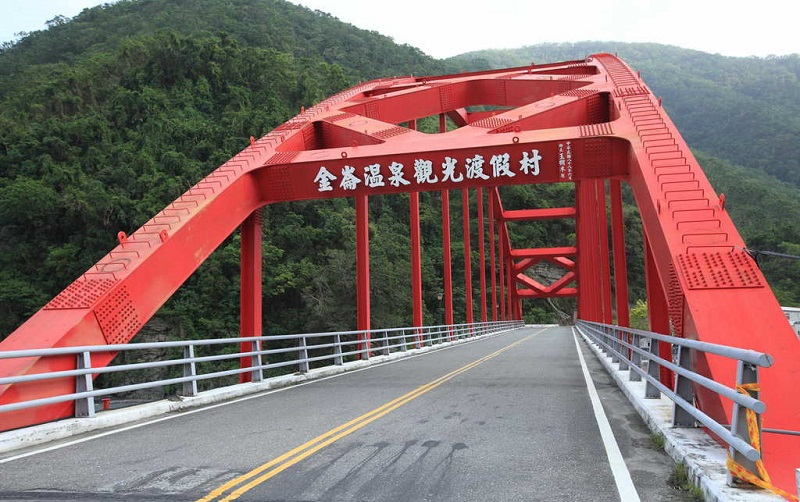

Taimali
Taitung County
Taimali Jean-Zen mountain is at the Dawang village
Taimali Township is a rural township in Taitung County. One-thrid of the population here are the Amis and Paiwan
peoples. Taimali consists of nine villages. The Taimali Jean-Zen mountain, located at the Dawang village, is the
best-know scenery in this area. From August to Octorber, when the Jean-Zen flower blooms, you can enjoy the golden hill,
covered by the flowers. The Duoliang Station, which sits beside the Pacific Ocean, is also a must-see tourist spot.
Although the Duoliang Station does not provide passenger traffic anymore, the station attracts lots of tourists for
visiting-- standing on the platform, and you can overlook the Pacific Ocean. The Kimlun Hot Springs Scenic Areas features
wild hot springs in Taitung. The Kimlun hot spring is a slightly alkaline sodium bicarbonated spring with the spring water
of 70 to 90 degree Celsuis. Dig through the Kimlun River, and the hot spring squirts out.
- Best seasons: Summer and autumn
- Transportation:
The nearest train station from this region is the Jinlun Station, Longxi Station, and the Taimali Station,
which belong to the TRA - South-Link Line.